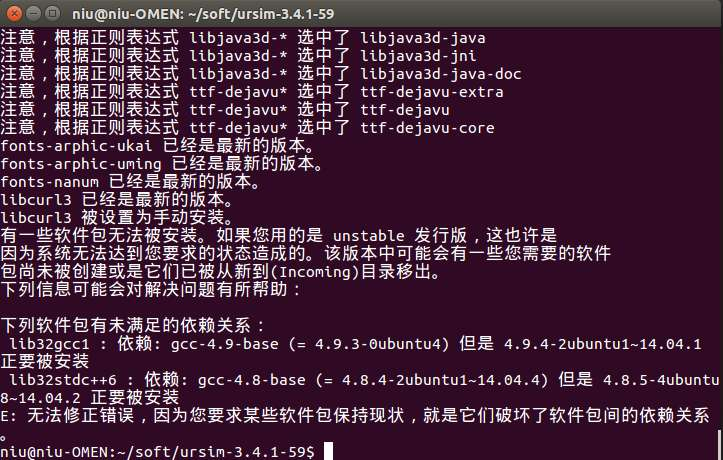

03-各种常见头疼Linux问题
若你发现有更头疼问题，随时更新，欢迎推荐，戳我发邮件📫
无法引导到Ubuntu系统¶
-
准备一个系统安装Ｕ盘，插入电脑－＞开机－＞选择试用Try ubuntu without install
-
在Ubuntu试用系统界面打开控制台（按Ctrl+Shift+T）
- 确保当前系统可以联网（无线Wifi或以太网）
- 执行如下命令安装 并使用
boot-repair工具
sudo add-apt-repository ppa:yannubuntu/boot-repair
sudo apt-get update
sudo apt-get install -y boot-repair
sudo boot-repair
在弹出界面点击Recommended repair等待期修复完毕，重启系统即可。
系统安装完无法开机¶
无法开机，界面进入到了grub>，或grub secure>，多半是grub文件损坏了，grub是引导程序，它可以引导多操作系统。以下是修复步骤：
- 执行
ls命令
找到Ubuntu的安装在哪个分区，在 grub>下输入以下命令：ls，会罗列所有的磁盘分区信息，如
(hd0), (hd0, msdos7), (hd0, msdos6), (hd0, msdos5), (hd0, msdos3)
-
依次执行
ls (hd0, msdos7)，直到找到不报错且显示目录的分区 -
如果找到了，如
ls (hd0, msdos5)
则说明引导boot目录装在了这里，执行以下命令
set root=(hd0,msdos5)
set prefix=(hd0,msdos5)/boot/grub
insmod normal
normal
-
上个命令执行完，应该就已经正常启动了界面。如果没有的话，再想想别的方法吧，不行就重装系统吧！
-
还没完，我们还要让你以后不出这样的问题，打开终端输入：
sudo grub-install /dev/sda
sudo update-grub
Python依赖环境问题¶
重装python依赖
sudo apt-get install --reinstall python3-dev
apt未满足的依赖关系¶
安装某也软件时，提示未满足的依赖关系，如下：

以lib32stdc++6依赖gcc-4.8-base为例：
# 执行
sudo aptitude -f install lib32stdc++6
- 首先提示你，提示是否保持现状，我们要修改，所以输入
n，按回车，不要保持现状。 - 接下来会提示你选择一个方案，这时候会列出多个方案供选择，要选刚刚其依赖的版本
gcc-4.9-base的方案，比如在第1个，输入a 1按回车，然后输入y按回车。即可
过程如下：
edu@edu:~$ sudo aptitude -f install lib32stdc++6
下列“新”软件包将被安装。
lib32gcc1{ab} lib32stdc++6
0 个软件包被升级，新安装 2 个， 0 个将被删除， 同时 385 个将不升级。
需要获取 310 kB 的存档。 解包后将要使用 1,338 kB。
下列软件包存在未满足的依赖关系：
lib32gcc1 : 依赖: gcc-4.9-base (= 4.9-20140406-0ubuntu1) 但是 4.9.3-0ubuntu4 已安装。
下列动作将解决这些依赖关系：
保持 下列软件包于其当前版本：
1) lib32gcc1 [未安装的]
2) lib32stdc++6 [未安装的]
是否接受该解决方案？[Y/n/q/?] n
下列动作将解决这些依赖关系：
降级 下列软件包：
1) gcc-4.9-base [4.9.3-0ubuntu4 (now) -> 4.9-20140406-0ubuntu1 (trusty)]
2) libgcc1 [1:4.9.3-0ubuntu4 (now) -> 1:4.9-20140406-0ubuntu1 (trusty)]
是否接受该解决方案？[Y/n/q/?] y
下列软件包将被“降级”：
gcc-4.9-base libgcc1
下列“新”软件包将被安装。
lib32gcc1{a} lib32stdc++6
0 个软件包被升级，新安装 2 个， 2 个被降级， 0 个将被删除， 同时 385 个将不升级。
需要获取 363 kB 的存档。 解包后将要使用 1,328 kB。
您要继续吗？[Y/n/?] y